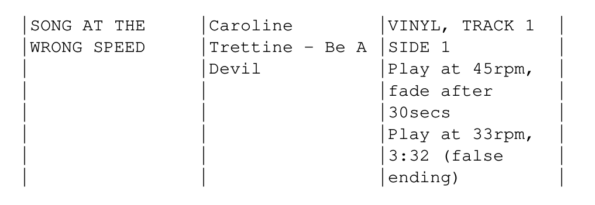

BTSHOW.DOC · 29 November 1996
First show ideas
Names Ben Taylor as presenter and Maxie Haddow-Allen as producer. Considers charity-shop records, punk, psychedelia, live poetry, acoustic sessions, and a theme tune.
Oxford Student Radio · 1995–1997
Running orders, letters, demo tapes on paper, and the things we meant to do. The pencilled-in guest and the person somebody remembers hearing are sometimes two different people.
16:00:00 NEWS
16:03:00 LINK – Start of show
16:03:20
Over start of Popcorn: [Aaargh!]
16:04:30 The Undertones –
Teenage Kicks
16:06:50 Television – Venus
Eoin Quiery had three live session slots. In between them we played everything from Nick Drake to DJ Shadow. Caroline Trettine’s ‘Be A Devil’ had an extra instruction. Play thirty seconds at 45 rpm, fade, then play it again at 33.

Paul Harrod wrote after hearing the show. He liked Rufus, thought we should bring Maxie in more, and reckoned I’d said ‘live on Oxygen 107.9FM’ quite enough for one afternoon.

Ben Taylor proposed a late-night programme of records, live acoustic music, and poetry, with Maxie Haddow-Allen producing. Local performers could come from the Catweazle Club and the Union Bar. The possible slots were 1–3am on a Monday or Wednesday.
Records
Studio cues
BTSHOW.DOC · BTSHOW2.DOC · BTSHOW3.DOC · BTSHOW.WRD
The post-demo notes say where Ben would tighten his links, where Maxie would adjust the levels, and where a pause should follow a performance. They also propose slipping from one version of ‘Dancing Queen’ into another at the right beat.
People
Records
The team wrote its assessment after making the demo.
DEMO.DOC · AFTDEM.DOC · OXYGEN mail 47
By January the opening had moved to four o’clock. Ben and Rufus had links between records. A poet and a musician each had time to come back for another piece. One jingle gives the show the mock announcement that it was filmed in front of a live studio audience.
Studio cues
BTSHOW4.DOC · JINGLES.DOC · STEVE.DOC · WEBSITE.DOC
Three surviving demo sheets open with news, weather, an ident, and ‘Popcorn’. The early February version starts its records with Aztec Camera. Another opens with the Clash and leaves spaces for new releases.
Records
Studio cues
2 February is the save date of DEMO2.DOC. DEMO3.DOC was saved on 9 February. DEMO4.DOC is a later revision.
DEMO2.DOC · DEMO3.DOC · DEMO4.DOC · JOE mail 9
The first running order puts ‘Teenage Kicks’ straight after the theme, then Television’s ‘Venus’ on vinyl. Eoin Quiery has three session slots. For Caroline Trettine’s ‘Be A Devil’, the operator is told to play thirty seconds at 45rpm, fade it, and start again at 33.
People
Records
Studio cues
A listener reported hearing the entire show on 20 February. Maxie later compared Eoin’s first-week session with Katie’s second-week one. These accounts establish both appearances; individual cues come from the running order.
DEAD1.DOC · FRASE.DOC · OXYGEN mail 2 · OXYGEN mail 4
Katie Buckhaven’s three session entries are ‘Let Her Cry’, ‘It’s A Funny World’, and ‘Silver Dagger’. Between them sit White Town, Love, and Aztec Camera’s version of ‘Jump’. Klaus Wunderlich’s Hammond provides the music under the trivia slot.
People
Records
Studio cues
Maxie wrote the following day about how Katie had sounded and the change in microphone levels since the first week.
DEAD2.DOC · OXYGEN mail 4
George Kirby is down for ‘To Ramona’, ‘I Cannot Yet Choose To Die’, and ‘I Feel Realer’. Dave Dwan has two readings and Professor Pea has a literary slot. The sheet marks two records that could be dropped if time ran short.
People
Records
Studio cues
DEAD3.DOC
Unclassified were Julian Dickinson and Julia Middleton, on guitar, voice, and soprano sax. Their session shares the sheet with Catweazle host Andreas Beltzer’s readings. The detailed version makes room for Uncle Anton’s Problem Corner and Rufus testing the microphones.
People
Records
Studio cues
In April Ben recorded that the duo had played and that Andreas had been on Dead Air the preceding term. The running order supplies the date and planned sequence.
DEAD4.DOC · DEAD4ONE.DOC · OXYGEN mail 47
With News Review off the schedule, the station offered Ben an extra half-hour. The revised sheet runs to 17:58. It calls for three sessions from Superfly, readings by Sam, a fishing phone-in, and Echo and the Bunnymen’s ‘The Killing Moon’ before the theme.
People
Records
Studio cues
In April Ben confirmed that Sam had done the demo and one show in the previous term. The 16 March sheet lists him as Sam.
DEAD5.DOC · DEAD5ONE.DOC · OXYGEN mail 12 · OXYGEN mail 47
April sheets arrange records by the Undertones, Jan & Dean, and Jonathan Richman alongside Eoin’s ‘The Time, The Place’ and ‘My First Cigarette’. A second list marks up Microdisney, Jimmy Cliff, and Everything but the Girl, with ‘Machine Gun’ by the Commodores as a music bed. On 26 April Ben wrote that an Ian Green session was due that week and three further songs were on MiniDisc.
People
Records
The four April files are working lists and reading material. Only the email identifies the Ian Green recording and its intended week.
2DEAD1A.DOC · 2DEAD1B.DOC · 2DEAD2.DOC · 2DEAD2A.DOC · OXYGEN mail 47
The joke in Ben’s pitch was to spend the whole show on Dylan covers and originals without mentioning what they had in common. The dated song sheet gives Eoin Quiery ‘Tangled Up In Blue’ and ‘Simple Twist of Fate’, and George Kirby a ten-minute ‘Sad Eyed Lady of the Lowlands’. The companion script gives Dylan Bedford a poetry slot.
People
Records
The source is headed ‘Dead Air 8/6/97 – Songs’. The newspaper listing quoted that morning announced Ben and Rufus with music and poetry.
3DEAD1.DOC · 3DEAD1A.DOC · DYLAN.DOC · OXYGEN mail 48 · JOE mail 48
Ben proposed a farewell show whose running joke was that the programme still had another week to go. The June 15 list brings back Jonathan Richman, adds Robert Wyatt’s ‘Shipbuilding’, and revisits the phone box outside the station. The date comes from the saved file and the sequence in Ben’s May pitch.
Records
Studio cues
3DEAD2.DOC · OXYGEN mail 48 · DEADAIR1.WRD · DEADAIR2.WRD
The final June plan called for a Christmas special. Ben proposed a William Shatner-style spoken ‘Eternal Flame’ and a Rufus Doors orchestral ‘Every Loser Wins’ for the two sides of a Christmas single. On the morning of 22 June, the station confirmed Dan Lester would operate the desk from 3 to 5pm.
People
The schedule and desk booking survive. The pitch records the Christmas items; it does not establish a recording or release of the single.
OXYGEN mail 48 · OXYGEN mail 51 · JOE mail 51 · DEADAIR1.WRD · DEADAIR2.WRD

I used to listen to Out on Blue Six when I’d missed the 21.55 from Manchester to Glossop and had to wait for the 23.20. By the time I wrote to Mark I had my own show in prospect.
‘And, er, it might very well “feature” three songs about vegetables. I might even start with “New Rose” too. So, any chance of an interview? Record a few “idents”? Give us a few tips? (What was that third song about vegetables?)’
I also promised him my treasured collection of charity-shop records, specifically The Happy Hammond Goes Pop Country and John Inman and a Bit of Brass, featuring the Massed Voices of the West Mercia Police Choir and the Webb Ivory Brass Band.
Ben’s proposals ranged from a quarter-hour walk through one part of Oxford to a weekly guide to the Internet and the World-Wide Web. ‘Inspirations’ invited contributors to choose a poem, memory, or practical idea; ‘The Hidden Link’ imagined two regular presenters spinning conspiracy theories.
DICOVER.DOC · INTERNET.DOC · INSPIRE.DOC · LINK.DOC
Two draft invitations on Oxygen 107fm letterhead ask the University Counsellor and Nightline to join a live panel on 14 November. They describe callers’ questions and the option of a pre-recorded contribution. The Nightline letter is signed by Maxie Haddow-Allen.
LETTER1.DOC · LETTER2.DOC · MAXIE.TXT
Ben numbered the discs, picked 197 tracks, and supplied the disc and track references, durations, and ranks for the night presenters. The labels name him at St Anne’s; his instructions say the records belonged to him and his brother. Presenters were to tick what they played and check the track against the CD.
CDLIST.DOC · PLAYLIST.DOC · LABELS.DOC · CDTIPS.DOC
The BASIC program reads six fields from LIST3.TXT and writes each row into AA, A, B, C, or D. There are eleven AA records, from Jan & Dean’s ‘Dead Man’s Curve’ to Frente!’s ‘Ordinary Angels’ from Vara Radio Holland.
LIST.BAS · LIST3.TXT · AA · A · B · C · D · SORTED
NightAir notes put Russian and French political news, the Ashes, Pride and Prejudice, and Maradona’s visit to the Oxford Union on the same sheet. Its date is the file’s save date.
NIGHTAIR.DOC · NIGHTAIR
In a letter saved in September, Ben said the station had secured a full regional licence starting the following February. He hoped to make a show with live music, poetry, and his charity-shop records. He asked the DJ for an interview and recorded idents.
RADC.DOC
A draft JCR motion in Joe Taylor’s Psion files says the Oxford and Brookes students had secured the city’s frequency and proposes £200 for studio set-up. The same file maps out specialist music and programming roles.
JOE_TAYL/I/WRD/OXYGEN.WRD
His college CV records November 1995 to June 1997 as ‘program team leader’ at Oxygen and says he worked on the test licence and full-time broadcasting. A separate application describes his role in originating Dead Air and producing and presenting it weekly.
CVWIZZ.DOC · KEEN4.TXT
BTSHOW.DOC · 29 November 1996
Names Ben Taylor as presenter and Maxie Haddow-Allen as producer. Considers charity-shop records, punk, psychedelia, live poetry, acoustic sessions, and a theme tune.
BTSHOW2.DOC · 29 November 1996
The November proposal puts the show at 1–3am and imagines regular Aztec Camera records, Pijnacker news, local poets, and songs played at the wrong speed.
BTSHOW3.DOC · 29 November 1996
Possible titles include ‘How to leave the planet’ and ‘Shambling Rank Amateurism’. One feature starts with the phone box outside the station.
DEMO.DOC · 8 December 1996
Theme candidates include the London Symphony Orchestra’s ‘Whole Lotta Love’, a Hammond version of ‘King of the Road’, and ‘Popcorn’.
AFTDEM.DOC · 13 December 1996
The team reviews microphone technique, the links, levels, and how much space to leave after a performance. Ben volunteers to drop ‘a word from our sponsors’.
BTSHOW4.DOC · 13 January 1997
Budgets eight minutes for a poet, twelve for a musician, four for trivia, and four for different versions of one song at the end.
WEBSITE.DOC · 20 January 1997
Draft listing for a ninety-minute show with live sessions, poetry, psychedelia, garage, folk, and charity-shop kitsch. It closes ‘Dead, dead good.’
JINGLES.DOC · 28 January 1997
A Batman-style refrain has variants for a time check, a tea break, the phone-in, and the end of the show. Other lines include ‘Dead Air is filmed in front of a live studio audience’.
STEVE.DOC · 28 January 1997
Four lines of feedback on voice, Rufus, variety in the record introductions, and the short stories.
DEMO2.DOC · 2 February 1997
Aztec Camera, the Clash, and Paul Simon open the record sequence. Readings with a Klaus Wunderlich backing are marked as replacements for session slots.
DEMO3.DOC · 9 February 1997
The Clash open the music; the sheet leaves spaces for five new tunes. ‘Popcorn’ returns after the news.
DEAD1.DOC · 16 February 1997
Ninety minutes with Eoin Quiery sessions, readings, trivia, and a disc played at two speeds. Cue times run from 16:00 to 17:30.
CONTACTS.DOC · 19 February 1997
The production folder contains a working directory of local musicians and poets.
DEAD2.DOC · 23 February 1997
Three songs for Katie Buckhaven, with a phone-booth song by Primitive Radio Gods near the close.
FRASE.DOC · 23 February 1997
Ben and Rufus dialogue, jingles, and instructions for a deliberate five-second silence. The document footer gives 16 February.
DEAD3.DOC · 2 March 1997
George’s live songs share a running order with Dave Dwan, Professor Pea, and records from Lord Tanamo to Jeff Buckley.
DEMO4.DOC · 2 March 1997
A version of the news, records, and readings format with a ‘BT/FS’ footer. The filename and revised save date cannot date any broadcast.
DYLAN.DOC · 2 March 1997
A short note pairs Bowie’s ‘Song For Bob Dylan’ with a Simon & Garfunkel song about Dylan.
DEAD4.DOC · 9 March 1997
A list of session, poetry, feature, and disc entries for the programme, including Julian Dickinson and Julia Middleton as Unclassified.
DEAD4ONE.DOC · 9 March 1997
A timed version of the 9 March show with Rufus on the microphones, three Unclassified slots, Andreas, Professor Pea, and Uncle Anton.
DEAD5.DOC · 16 March 1997
The tracks and features for an extended show include Superfly, Sam, Kenickie on tape, and Ghostface Killah.
DEAD5ONE.DOC · 16 March 1997
The extra half-hour takes the show through to 17:58. The closing stretch includes ‘The Killing Moon’ by Echo and the Bunnymen.
2DEAD1B.DOC · 20 April 1997
A collection of texts in capitals. No aired sequence or performer is established by the file.
2DEAD1A.DOC · 27 April 1997
Eoin’s songs sit with the Cadillacs, the Champs, Jan & Dean, and Gorky’s Zygotic Mynci. Some entries carry disc and track numbers; there is no complete on-air sequence.
2DEAD2.DOC · 27 April 1997
The list marks individual selections and names ‘Machine Gun’ by the Commodores as a music bed.
2DEAD2A.DOC · 27 April 1997
Surreal compliments, other reading material, and a link about playing back a message.
KAMASUT.DOC · 27 April 1997
A text attributed within the file to a published translation. The file alone does not establish that a reading was broadcast.
3DEAD1.DOC · 8 June 1997
Notes for the penultimate show bring together Eoin Quiery, George Kirby, and Dylan Bedford. The script also casts the Boo Boys and stages an interview.
3DEAD1A.DOC · 8 June 1997
Commercial recordings and live options appear separately. The latter include two Eoin songs and a ten-minute slot for George’s ‘Sad Eyed Lady of the Lowlands’.
3DEAD2.DOC · 15 June 1997
A 15 June file lists Jonathan Richman, Robert Wyatt, the Smiths, and the phone box outside the station.
The 38 timed entries run from the four o’clock news to the 5.30 ident. These are desk cues. The sheet gives 17:26:30 twice.
| Time | Cue | Studio sheet |
|---|---|---|
| 16:00:00 | News | Station news |
| 16:03:00 | Link | Start of showCue the sound of the team running in late. |
| 16:03:20 | Theme | PopcornShout over the start, then talk over the theme. |
| 16:04:30 | Record | The Undertones – Teenage KicksCD, track 5. Straight in; fade from 2:19. |
| 16:06:50 | Record | Television – VenusWhisper over the outgoing fade. Vinyl at 45rpm, side A, track 1; ends at 3:43. Follow with the ‘Yikes!’ hit. |
| 16:10:40 | Trail | Station trail |
| 16:11:30 | Link | Introducing Dead Air, Maxie, and RufusIdentify the records, preview the programme, and introduce Rufus as the work-experience member of the team. |
| 16:13:15 | Record | Nick Drake – One of These Things FirstKeep the mics up at the start. Bryter Layter, track 4; piano at 0:13. |
| 16:18:00 | Station break | Advertisements and ident |
| 16:20:00 | Link | Rufus’s choice‘Yo!’ hit, identify the records, then the scripted link. |
| 16:21:30 | Record | DJ Shadow – Organ Donor1:57; follow with the ‘Wait just a minute’ hit. |
| 16:23:30 | Session | Eoin QuieryTalk to the musicians. Introduce Eoin’s choice. |
| 16:29 | Record | Stina Nordenstam – Little StarRomeo + Juliet soundtrack; straight in, 3:36. The disc track number is left as question marks. |
| 16:32:30 | Record | The Fall – Totally WiredStation ident and whisper. The Collection, track 13; three seconds of drums. |
| 16:36 | Reading | Fraser readsKlaus Wunderlich’s Happy Hammond underneath. The script calls for the decks to go off in the middle of the reading. |
| 16:38 | Record | Tiger – On The RoseKeep the mics up. CD, track 1; five seconds of intro, guitars at 0:13. |
| 16:40:40 | Station break | Advertisements, ident, and linkIdentify the records; scripted link on interview advice. |
| 16:42 | Session | Eoin QuierySecond session slot. |
| 16:46:30 | Feature | Caroline Trettine – Be A DevilAfter the link, play side one, track one at 45rpm, fade after thirty seconds, then replay at 33rpm. Watch for the false ending. |
| 16:51 | Ident | Promotional ident |
| 16:52 | Record | Monaco – What Do You Want From Me?Three short hits and a link into the record. Five seconds of bass at the start; start talking over the fade at 3:42. |
| 16:56:30 | Feature | Maxie’s trivia slotIntroduce the New Order connection. Meco’s Star Wars Theme/Cantina Band underneath, on vinyl at 45rpm. |
| 16:58 | Station break | Advertisements and news intro |
| 17:00:00 | News | Station news |
| 17:03:00 | Theme | PopcornBatman hit, talk over the theme, and introduce the last half-hour. |
| 17:03:40 | Record | Aztec Camera – Good Morning BritainStray, track 5; guitar and drums, ends at 3:58. |
| 17:07:40 | Reading | Fraser readsPretend not to notice the previous record has ended. Joy Division’s Love Will Tear Us Apart is the bed, from Permanent, track 1. |
| 17:10 | Trail | Promotional trail |
| 17:11 | Session | Eoin QuieryA shout into Eoin’s third session slot. |
| 17:14:30 | Phone-in | Phone-in |
| 17:18 | Station break | Link, advertisements, and identIdentify the records; scripted ‘Simple Simon’ link. |
| 17:20 | Record | Urusei Yatsura – Strategic HamletsTrack 1; eight seconds of guitar. No fade. Play the hit at the end. |
| 17:22:39 | Record | Jonathan Richman – I Was Dancing In The Lesbian BarI, Jonathan, track 5. Straight in; ends at 3:39. |
| 17:26:30 | Link | FA Cup betWhisper hit, identify the tracks, then the FA Cup link. |
| 17:26:30 | Mix | Dancing QueenThe desk sheet gives this mix the same start time as the preceding link. |
| 17:28:50 | Theme | PopcornTalk over the closing theme. |
| 17:29:50 | Link | End of show‘We’re not live now are we?’ |
| 17:30 | Ident | Station ident and out |
Programme notes as data · Document catalogue · Full station programme grid